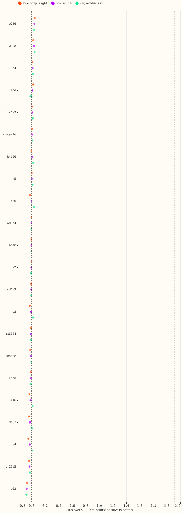
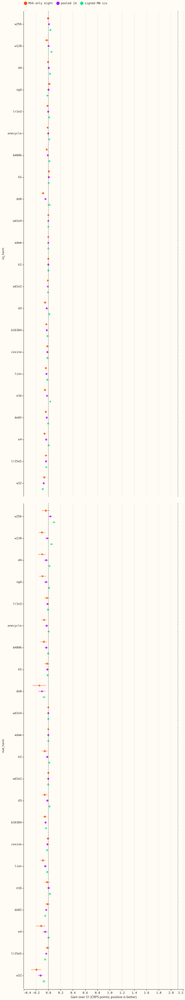
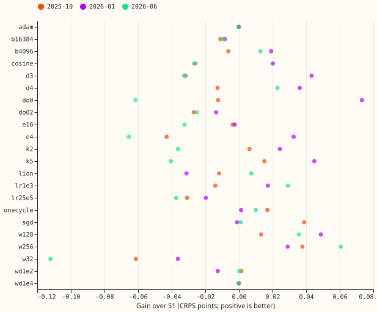
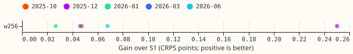
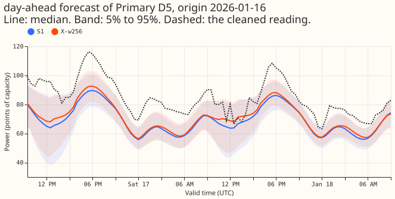
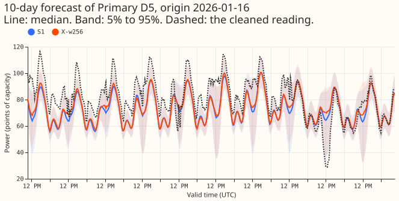

Does changing any one setting of the S1 demand neural network, or a random search over the three most influential settings, lower its quantile score by the agreed margin?
None of the 9 pre-registered single-setting changes to the S1 demand neural network improved its forecast by the margin we required, so S1 stays as it is. S1 is the baseline demand forecaster of experiment 428: one neural network, trained on all 14 Primary substations (6 reported in signed MW, 8 in MVA only), that outputs a probability distribution over demand from the three most recent power readings and the surprise at each. We changed one setting at a time on 3 test months by 2 seeds and compared the continuous ranked probability score (CRPS, in points of capacity; lower is better) with S1's on clean rows, meaning half-hours with no load-shift event near the target or the recent readings. The gain of an arm is S1's CRPS minus the arm's. The margin was 0.064 points, the smallest gain that two seeds could reliably detect (the agreed margin of 0.03 is smaller, so it does not apply). No pre-registered arm reached the margin, so the pre-registered plan stopped there: no random search was run. The verdict is not supported, which here means that no change helped enough to adopt.
Post hoc (not pre-registered), we ran the other 13 changes and a 5-fold confirmation of hidden width 256. The pre-registered verdict is unchanged. None of the 13 changes moves S1. Width 256 passes the confirmation rule (gain 0.087 points on 5 folds by 3 seeds, interval 0.067 to 0.107, better on all 5 folds). Most of that gain comes from one fold, 2025-12, which was not in the screen and has no stored S1 forecast (+0.250). On the four folds with stored S1 forecasts (2026-06, 2026-01, 2025-10, 2026-03) the gain is +0.047, below the margin, and real load-shift events get worse. We do not recommend width 256.

Figure 1. Gain over S1 in CRPS points on clean rows (positive is better), 3 folds by 2 seeds, all 22 arms (9 pre-registered, 13 post hoc). Dashed lines mark 0 and the 0.064 margin.

Figure 2. The same on injected harm and real harm rows.

Figure 3. Each arm's gain in each screen fold, clean pooled rows.

Figure 4. Width 256's gain in each of the 5 confirmation folds (post hoc), 3 seeds.

Figure 5. A day-ahead forecast of one signed-MW Primary, S1 and width 256 (seeds 0 and 1).

Figure 6. The full 10-day horizon of one forecast of the same Primary.
Results
- Pre-registered stage (width, depth, embedding, components; 54 fits). Gains over S1 in CRPS points, pooled clean: width 256 +0.042 (0.029 to 0.056, 3 of 3 folds), width 128 +0.033, depth 4 +0.016, 5 components +0.007, 2 components -0.002, depth 3 -0.006, embedding 16 -0.013, embedding 4 -0.024, width 32 -0.070. S1's absolute score is 3.011 (screen folds).
- Post hoc, the other 13 arms (78 fits). SGD +0.012, learning rate 1e-3 +0.011, one-cycle +0.009, batch 4,096 +0.009, dropout 0 +0.001, weight decay 1e-4 -0.0001, Adam -0.0001, weight decay 1e-2 -0.004, batch 16,384 -0.010, cosine -0.010, Lion -0.012, dropout 0.2 -0.022, learning rate 2.5e-4 -0.029. All 13 sit inside the 0.064 minimum detectable effect.
- Post hoc, width 256 on 5 folds by 3 seeds (18 fits: 15 for width 256 and 3 S1 refits for 2025-12). Pooled clean CRPS 3.300 against S1's 3.387 (+0.087, 0.067 to 0.107). Per fold: 2026-06 +0.068, 2026-01 +0.027, 2025-10 +0.047, 2026-03 +0.046, 2025-12 +0.250. The four folds with stored S1 give +0.047, and the three screen folds at 3 seeds give +0.047.
- Where width 256 loses (confirmation). Real-event CRPS 6.956 against 6.673 (-0.283; MVA-only eight -0.519); real-harm MVA-only eight -0.087. Clean q95 coverage 0.918 against 0.933 and q99 0.979 against 0.986; real-event q99 coverage 0.857 against 0.891 (signed-MW six 0.774 against 0.830). Tail pinball loss on clean, real-harm, and injected-harm rows stays within 0.02 points.
- Checks (printed by
e00447_figures.py). Error of the median forecast, clean rows (screen folds): signed-MW six 4.700 (S1) against 4.668 (width 256) and MVA-only eight 5.685 against 5.671; the median minus mean forecast is -0.33 and -0.29 at the six, so the CRPS gain is not a median-versus-mean artefact. Two audit triggers fired: one fold carries the gain (2025-12), and the gain is on clean rows while real events lose. Seeds 0 to 5 of S1 each use their own cross-fitted lagless table, so the stored seeds are independent draws. - Reference. S1 is experiment 428's and 439's stored forecasts; the refit under this experiment's training script reproduced the stored validation loss exactly (0.4336399, 60 epochs). For 2025-12, which has no stored S1, the S1 refit of this experiment is the reference.
Caveats
- Resolution. At two seeds the screen detects 0.064 points about half the time and about 0.09 points 80% of the time, so a gain between 0.03 and 0.064 is undetectable here and is no evidence of a flat optimum.
- Winner's curse. Width 256 was chosen as the best of 22 arms, so its screen gain is biased upwards, and the confirmation reuses rows and seeds that overlap the screen (3 folds, seeds 0 and 1); the new folds carry the gain.
- Optimiser arms change the learning rate and weight decay together with the update rule, so they test a recipe, not the optimiser alone. Schedules ran all 60 epochs.
- Schedule. Monthly refits (the research default); a weekly-refit re-check was not run.
- What the result rules out. Changing one of these settings at a time did not give S1 a gain of the agreed size in this screen. Combinations were not tested because no single arm moved.
Next steps
- Look for demand gains in the inputs and the lag-trust design, not in these settings.
- If width 256 is of interest, test it inside the assembled neural network and report real-event CRPS and q99 coverage beside the clean-row gain.
Plan
Every change is made to S1 one at a time, and the order of the stages is set by the stop rule.
- Base. S1 of experiment 428: hidden width 64, 2 hidden layers, Primary embedding 8, 3 mixture components, dropout 0.1, AdamW with weight decay 1e-3 and learning rate 5e-4, constant schedule, batch 8,192, gradient clip 1.0, training on clean and injected worlds, up to 60 epochs with early stopping (patience 8). All of these except the setting under test carry over to every arm.
- Levels (22 one-factor arms). Hidden width 32, 128, 256. Depth 3, 4. Embedding 4, 16. Components 2, 5. Dropout 0, 0.2. Weight decay 1e-4, 1e-2. Learning rate 2.5e-4, 1e-3. Schedule cosine over the 60-epoch cap, one-cycle (peak 2 x 5e-4, 60 epochs of steps; S1 runs all 60 epochs, so the schedules complete). Batch 4,096, 16,384. Optimiser Adam (no decay), Lion (learning rate 1.5e-4, weight decay 1e-2), SGD with Nesterov momentum 0.9 (learning rate 5e-2, weight decay 1e-3). The optimiser arms use each optimiser's customary learning-rate scale, so they test a recipe, not the optimiser alone.
- Stages. Stage 1a runs hidden width, depth, embedding width, and mixture components (9 arms). The other factors (dropout, weight decay, learning rate, schedule, batch size, optimiser; 13 arms) run only if a stage 1a arm moves S1; if none does, the page says the neural network is insensitive to these settings and stops.
- Fits. 6 fits per arm (3 folds by 2 seeds): 54 for stage 1a, 78 for the rest, up to 120 for the random search, and 33 for the confirmation (2 configurations by 5 folds by 3 seeds, plus 3 S1 refits for 2025-12, which has no stored S1 forecast; the refits stand in as S1 for that fold).
- Gate. The refit of S1 (2026-01, seed 0) under this experiment's training loop reproduced experiment 428's stored validation loss exactly (0.43363991, 60 epochs). Any later disagreement beyond 1e-3 in validation loss stops the sweep.
- Seeds. Seeds 0 to 5 of S1 each have their own cross-fitted lagless table (experiments 404 and 439), so the six stored seeds are independent draws.